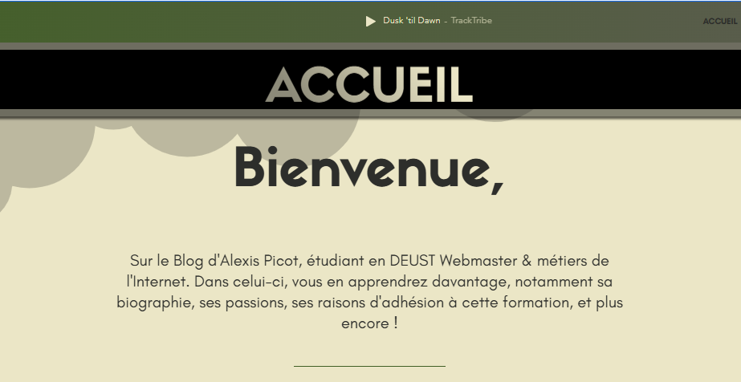
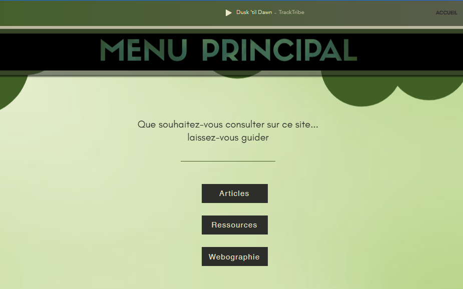
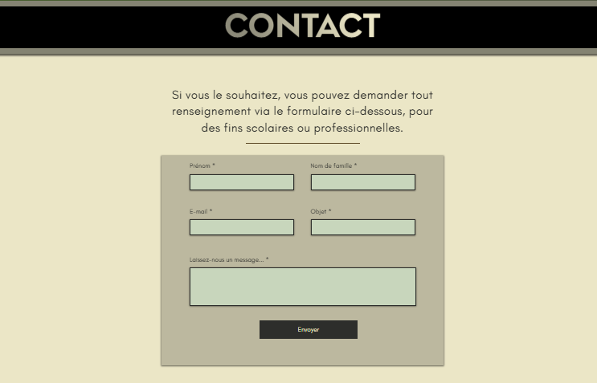

Mon site Wix
Mon site Wix
Wix fut le premier CMS utilisé lors de ma formation. Il est facile d'usage et permet de créer rapidement un site web attractif, mais il est limité en termes de personnalisation et de fonctionnalités avancées. J'ai donc compensé ce frein en exprimant ma créativité dans le design et l'organisation du contenu et de l'expérience utilisateur.

Ce projet consistait à réaliser un blog personnel afin de me présenter et de créer une première présence sur le web. L'objectif était de permettre aux visiteurs d'en apprendre davantage sur mon parcours, mes passions et les raisons qui m'ont poussé à rejoindre le DEUST Webmaster et métiers de l'Internet.
J'ai organisé le site autour de plusieurs rubriques accessibles depuis un menu de navigation. La page d'accueil accueille les visiteurs et les oriente vers les différentes parties du site. Une page « À propos » présente notamment ma formation et mon parcours étudiant.

J'ai également intégré une page de contact avec un formulaire permettant aux visiteurs de m'adresser des demandes de renseignements dans un contexte scolaire ou professionnel. D'autres rubriques donnent accès à des ressources, à une webographie ainsi qu'aux différentes informations légales du site.

Cette première expérience m'a permis de découvrir le fonctionnement d'un CMS, de prendre en main son interface de création et de comprendre les différentes étapes nécessaires à la réalisation d'un site web. J'ai notamment travaillé sur la structuration des pages, la navigation, la présentation des contenus et l'expérience proposée aux visiteurs.
Malgré les limites de personnalisation de Wix, ce projet a constitué une première étape importante dans mon apprentissage du développement web et de la gestion de contenu.